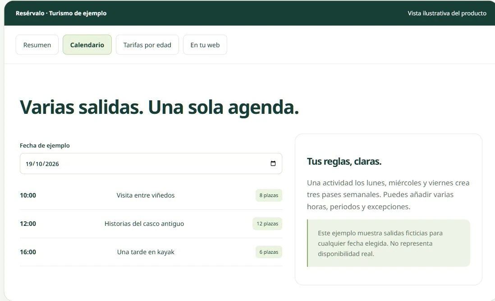

En Producción · Piloto
SaaS B2B

Resérvalo
Plataforma SaaS de reservas y venta directa diseñada para empresas de turismo activo y bodegas. Control de cupos en tiempo real, tarifas por edad, asignación de guías y widget integrable sin comisión por reserva.
🤖 Aporte de IA / Prompting:
Modelado algorítmico de aforos cruzados y generación asistida de lógica reactiva de cupos y copys de alta conversión.
Next.js
Tailwind
Vercel
Demo Real